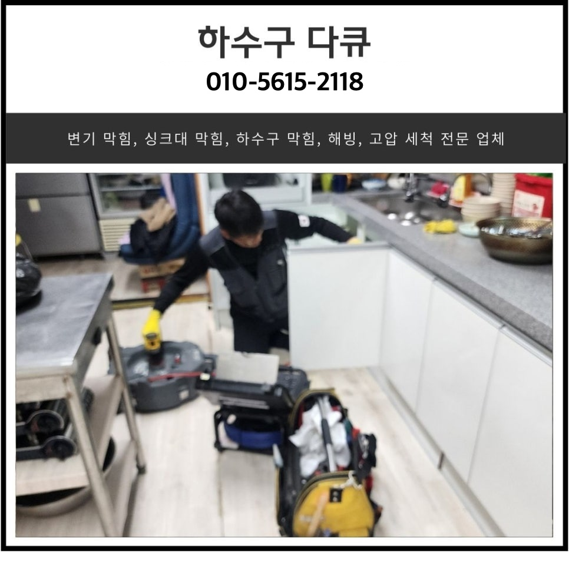
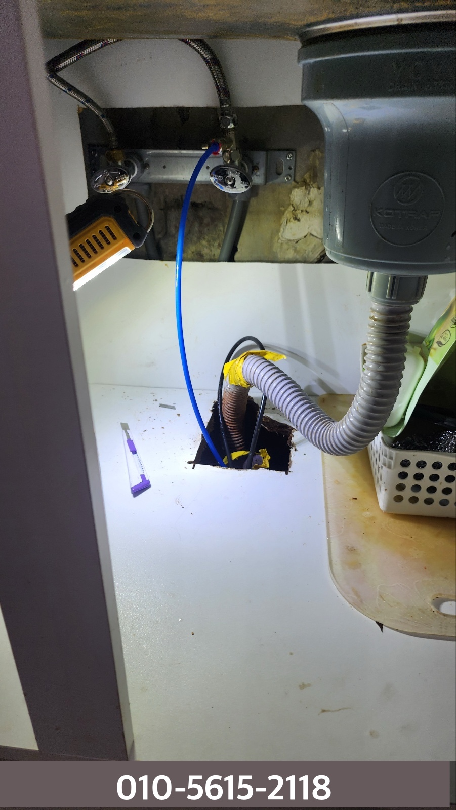
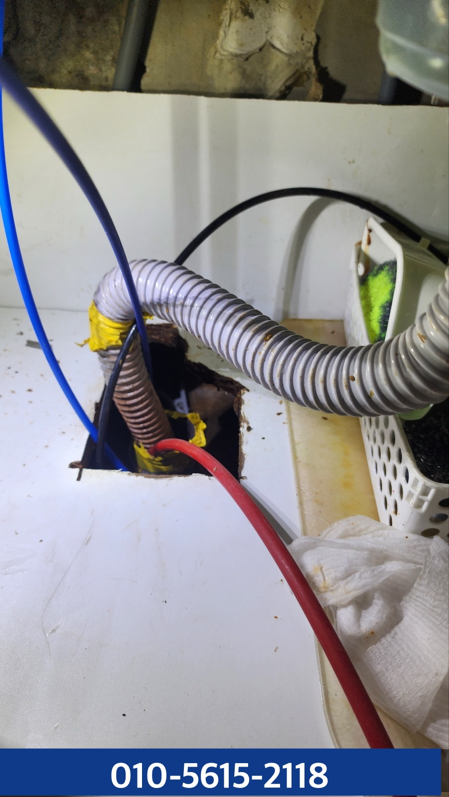
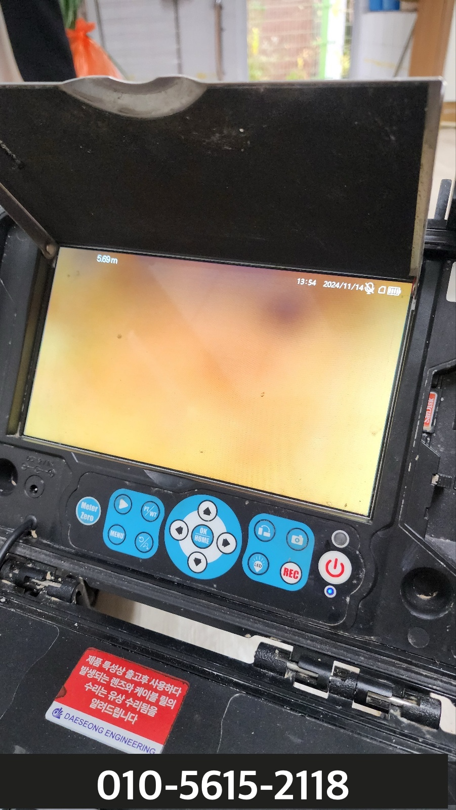
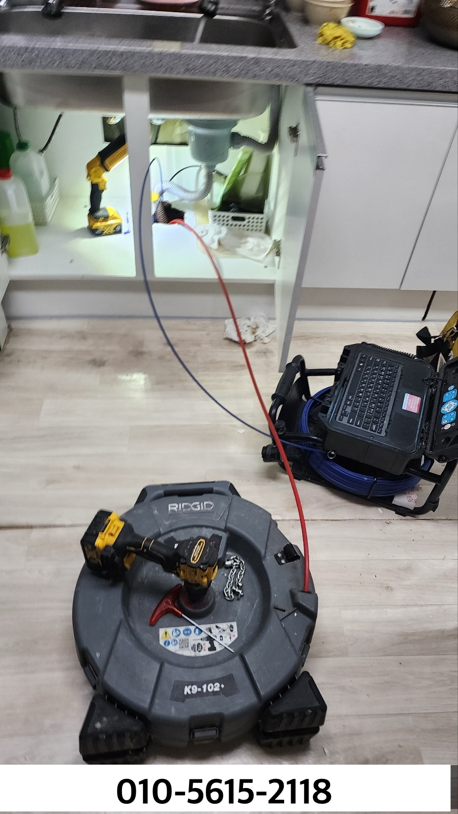
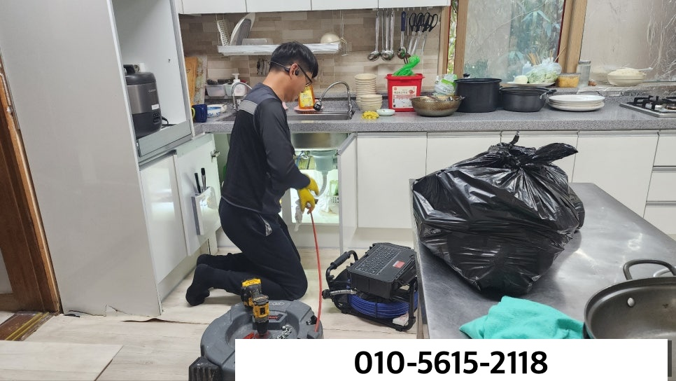
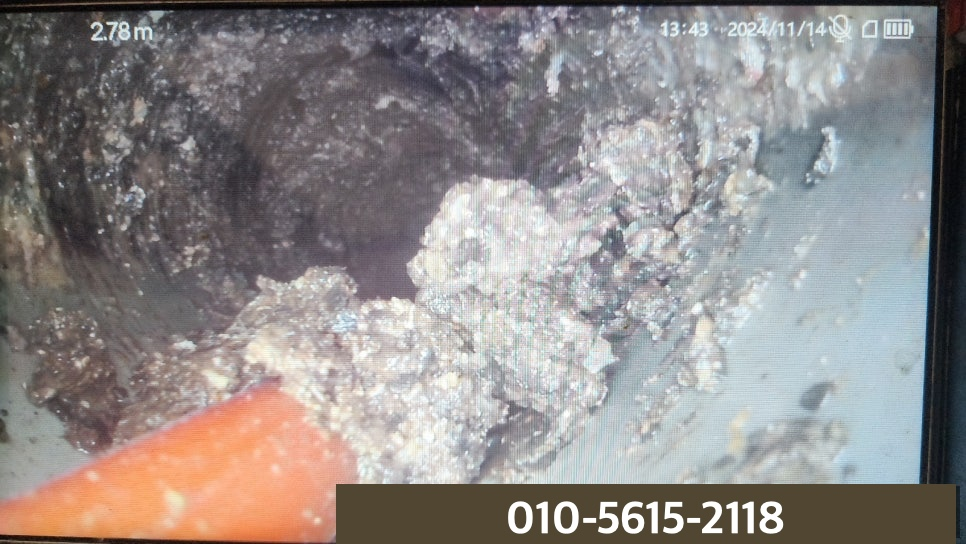

🏠 경안동 싱크대 역류 막힘 쌍령동 하수구 배관 전문 설비 업체
오산시 가수동 배관막힘 전문 시공 후기

📋 작업 개요
- 위치: 오산시 가수동
- 서비스 유형: 배관막힘, 내시경점검
- 작업 일시:
- 업체명: 하수구수사대 (010-5615-2118)
🔍 문제 상황
안녕하세요.
경안동 싱크대 역류, 막힘 쌍령동 하수구 배관 전문 설비 업체 하수구 다큐입니다.
물가가 많이 오르고, 생활이 팍팍해지면서 부업을 시작하거나 투잡을 하시는 분들이 늘어나고 있습니다.
그러면서 자연스레 생활비를 아끼기 위해 재료를 직접 준비해 음식을 만들어 드시거나, 간편하게 조리만 하면 되는 밀키트 전문점을 이용하면서 외식비를 줄이는 가정이 많이 늘어나고 있어요.
외식비를 줄이기 위해 주방에서 음식을 해 먹게 된다는 것은 싱크대 이용 횟수가 많아지겠죠?
아무래도 주방의 싱크대를 사용하는 횟수가 많아질수록 경안동 싱크대 역류, 막힘이 발생할 확률이 높아질 수밖에 없습니다.
물론 싱크대를 사용하실 때 조심하겠지만, 배수구로 조금씩 흘러들어간 기름 성분이 배관의 내벽에 쌓이면서 문제가 발생하게 되는데요.
추워진 날씨로 인해 기름 성분이 굳는 시간도 빨라지면서 경안동 싱크대 역류, 막힘으로 연락을 많이 받고 있습니다.
현장 소개

🔎 원인 분석
💡 전문가 진단: 현장 소개
오늘은 경안동 싱크대 역류, 막힘으로 연락을 받아 다녀온 현장을 소개해 드릴게요.
몇 달 전부터 물을 조금씩 사용하면 아무런 문제는 없었는데, 많은 양의 물을 사용하게 되면 배수구에서 역류하는 현상이 나타났다고 합니다.
주방 싱크대와 연결되어 있는 배관 내부에 문제가 있다고 생각하신 고객님께서 시중에서 쉽게 구할 수 있는 배수구 클리너나 과탄산 소다 등을 사용해 배관 청소를 진행해 주셨다고 해요.
하지만 드라마틱 하게 좋아지는 효과는 나타나지 않자, 네이버에 수많은 설비업체의 블로그를 읽어보시다가 쌍령동 하수구 배관 전문 설비 업체 하수구 다큐로 연락을 주셨습니다.
작업 과정
신속하게 현장에 도착해 주방의 싱크대부터 점검하기 시작했습니다.
물을 틀어보니 고객님께서 말씀하신 것처럼 배수 속도가 굉장히 느려 생활하시기 불편하셨을 것 같았어요.
배관의 내부를 직접 확인해 보기 위해 내시경 카메라를 배관으로 진입시켜야 하는데요.
싱크대와 하수구를 연결해 주는 주름 호스를 분리해 보니 기름 슬러지가 붙어있는 걸로 보아 배관 내부에도 많은 이물질이 쌓여있을 거라는 예상을 할 수 있었습니다.

🔧 작업 과정
내시경 카메라가 배관 내부에 진입하자마자 보여준 배관 내부의 화면이에요.
그동안 차곡차곡 쌓인 기름 슬러지들이 카메라의 조명을 받아 주황빛으로만 확인되고 있습니다.
예상했던 대로 배관의 입구부터 슬러지가 가득 메우고 있어 배관 청소가 시급해 보였습니다.
쌍령동 하수구 배관 전문 설비 업체 하수구 다큐는 고객님께 내시경으로 보이는 배관 내부를 고객님께 보여드리며, 배관 청소의 필요성을 설명해 드렸어요.
이야기를 모두 다 들으신 고객님께서도 그동안 싱크대가 언제 역류할지 몰라 항상 불안하고 불편하셨다며, 배관 청소를 해달라고 요청하셨습니다.
하수구 배관 전문 설비 업체 하수구 다큐는 플렉스 샤프트 장비를 이용해 배관을 막고 있는 이물질을 제거하는 작업을 진행하기로 했어요.
내시경 카메라를 이용해 배관 내부를 체크하며, 플렉스 샤프트 장비를 이용해 배관을 가득 채운 기름 슬러지를 타격해 제거하는 작업을 시작했습니다.
몇 차례 반복하자 통수가 되기 시작하면서 고여있던 물과 이물질이 흘러내러 가고 기름 슬러지들이 제 모습을 드러냈어요.
기름 슬러지가 아직은 딱딱하게 굳지 않았다 보니 노즐 끝에 뒤엉켜있는 모습도 어렵지 않게 확인할 수 있었습니다.
처음 배관을 확인했을 때에 비하면 많은 양의 이물질을 제거했지만 남은 기름 슬러지를 제거하는 작업을 계속해서 진행했어요.
플렉스 샤프트 장비는 노즐 끝에 달려있는 체인이 본체에 연결되어 있는 전동 드릴의 빠르게 회전하는 힘을 전달받아 배관 내벽에 달라붙어 있는 기름 슬러지를 타격해 제거하는 역할을 합니다.
육안으로 확인이 어렵다 보니 내시경 카메라와 함께 진입시켜 이물질의 위치를 파악하며 반복적으로 청소를 진행하게 됩니다.
수차례 반복해서 작업을 진행하자 그동안 쌓여있던 이물질이 모두 제거되고 배관이 제모습을 되찾았어요.
고객님과 함께 배관의 깊은 곳에서부터 꼼꼼하게 이물질이 모두 제거된 모습을 살펴보고, 마지막으로 많은 양의 물을 흘려보내며 아무런 이상이 없는지 테스트까지 진행하고 작업을 마무리할 수 있었습니다.
주방에서 사용한 기름을 깨끗하게 제거한다고 해도 조금씩 배수구로 흘러들어갈 수밖에 없습니다.


✅ 작업 완료
네이버에 나오는 수많은 정보를 통해 직접 뚫어보더라도 근본적인 원인을 해결할 수 없기 때문에 다시 막힐 수밖에 없어요.
주방의 싱크대를 이용하면서 곧 막히는 건 아닐까? 걱정하지 마시고 하수구 배관 전문 설비 업체 하수구 다큐와 함께 해결해 보세요.
고객님의 걱정까지 시원하게 해결해 드리겠습니다.
경기도 오산시 오산로160번길 15 201-L16호




⚠️ 하수구 배관 막힘 예방 및 관리 가이드
- ✅ 머리카락, 비닐, 물티슈 등 물에 분해되지 않는 이물질은 절대 흘려보내지 마세요.
- ✅ 기름기 많은 식기는 설거지 전 키친타올로 먼저 기름때를 닦아내세요.
- ✅ 주기적으로 배수구에 뜨거운 물을 가득 부어주어 유지방 고착을 방지하세요.
- ✅ 작업 후 1년 이내 재발 시 무상 A/S 보증 서비스를 제공합니다.
💡 핵심 정리
- 확실한 장비 작업(내시경 점검 및 샤프트 스케일링)으로 원인을 뿌리 뽑습니다.
- 작업 후 1년 이내에 동일한 부위 재발 시 100% 무상 A/S 서비스를 보장합니다.
- 서울 · 경기 · 인천 전 지역에 24시간 언제든 긴급 출동할 수 있도록 항시 대기 중입니다.
❓ 자주 묻는 질문 (FAQ)
🚨 오산시 가수동 배관막힘 문제로 고민이신가요?
정확한 원인 진단과 확실한 시공으로 재발 없는 해결을 약속드립니다.
24시간 긴급 출동 | 서울 · 경기 · 인천 전지역 | 1년 내 재발 시 무상 A/S